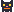
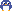

design / mascots
Mascots

Mochi
cat · Konami code: walks along the bottom edgeHop
frog · tool finished: hops across the result
Bun
bunny · rare: peeks in from the edge on 1 of 20 loadsBloop
jellyfish · long jobs: floats in the progress bar
Waddle
penguin · December to February: slides across the home pageEmber
fox · burn after reading: appears when the page is consumed
Boo
ghost · expired and 404 pages
Cumulo
cloud · site published; click the logo 5 times: drifts acrossAll motion stops under reduced-motion; eggs never block content or take focus.